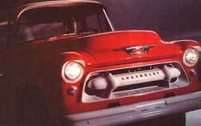
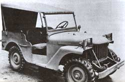
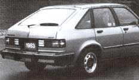
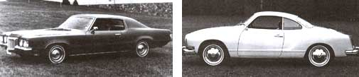
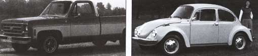
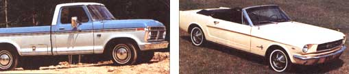
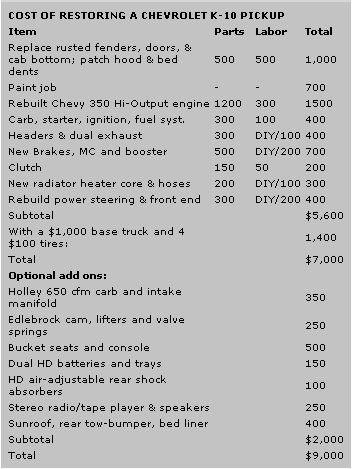

Practically Used Homestead Wheels
April/May 1994
Country Skills
Well-preserved older cars and trucks everyone can afford to buy and fix.
By John Vivian.
My truck was in the shop and they'd loaned me a little '90s-era "world" car. I don't recall whether it was a Nissan, Ford, or whatever. With their squinty headlights and wedgie shapes, the new cars all look alike to me. Their computer-managed engines run alike as well: competent, fuel-stingy... and dull. But this one handled crisply, the stereo was "awesome" as the kids say, and I was getting used to the "ergonomic" cockpit.
Then, halfway up a lonely hill road, the idiot lights went on, the engine died, and a whole chorus of beepers and buzzers piped up. I got out to look under the hood, expecting to wire a broken choke pull-off or attach a loose hose and be on my way. But nothing in the engine compartment was familiar to my '50s-trained auto-eye. There wasn't even a carburetor, but a squat gray box labeled "Electronic Fuel Injection" surrounded by a snarl of tubes, pipes, wires, and hoses.
After hiking to a phone, I found myself bouncing down the mountain in the cab of Ben Perkins' old Dodge tow truck. After driving the claustrophobic little car-now trailing along behind-I relished spreading out on the roomy bench seat, able to spread my elbows and cross my legs. The truck was as friendly as an old dog. Its engine growled, the muffler rumbled, gears whined, and I luxuriated in the faint odors of gasoline, engine oil, and gear grease. The truck may have been homely and a little rough in places, but it was sturdy, practical, and straightforward. An honest-Abe Lincoln of a truck.
"Sure runs good, Ben," I said. "How long you had it?"
"Got it war-surplus in '62," he said. "Fer $275."
"Not too shabby a deal," I said. "How many miles?"
"Dunno fer sure," he said. "It came with 1,500, but the odometer quit in '75. Quarter million, I'd guess."
Ben said that he'd replaced the bed and cab floors and the fenders when they threatened to rust out, had put in "several" clutches, and rebuilt the transmission twice. When leaded gas was phased out, he replaced the original "flathead-6" engine with a "Chevy V-8 that's about ready fer a rebuild." He hadn't done a whole lot more to the truck in 30 years' time but change the oil and keep tires on it.
"How's the towing business?" I asked.
"Never better," Ben said. "Can't nobody work on these new 'government cars' but the city dealers that sold 'em. Nope, business ain't bad at all."
Why Buy New?
After the home, most country residents' single greatest expense is buying and maintaining the vehicles they depend on. In a "buy-now/pay-later," throwaway economy, we're huckstered to borrow $10,000-30,000 for a new or late-model-used car or truck. Over a five-year loan, principal and interest, insurance, taxes, fees, and upkeep combine to cost one and a half to twice the vehicle's price. We end up paying as much as $40,000 for a $20,000 vehicle.
Why? A new car depreciates 20% as soon as it leaves the lot and it falls another 10% or 15% each year thereafter. After five years and 80,000 miles, the value of a $20,000 vehicle (that we paid double for) is only $4,500. But it's a tough habit to break; the new cars have all those new features, snazzy styling, and the neighbors just got a new sports utility with fourwheel drive and that "new car smell." But the neighbors are also never free of car payments.
In contrast, Ben Perkins makes a good living and (with a slide-in camper in place of the wrecker) goes to Florida every February in a truck that has cost him less to buy used and to maintain himself over 30 years than what most consumers shell out in any one year to buy new.
You or I can still get the truck that Ben drives: a low-mile, rust-free, four-wheel-drive '50s militaryspec pickup just out of government storage and running fine-but these days, it'll cost $2,500 to $4,500.
For the same or less money (a lot less if you shop hard, dicker harder, pay upfront and in cash) you can buy a younger, more conventional car or truck that will be more reliable, better looking, cheaper to operate, sturdier, and safer to drive than any modern vehicle. Plus you or any corner gas station mechanic can fix most problems using reasonably priced parts stocked by any NAPA or Western Autowho will also sell you "new car smell" in an aerosol can.
Indeed, if you pick the model and year carefully, your vehicle can be worth more at the end of five years than when you bought it. Many '50s to '70s cars and trucks are (or soon will be) appreciating in value. Get ahold of the Old Cars Price Guide and JC Whitney parts catalog-on newsstands or by mail (see "Sources") and go old-car shopping.
State of the Art
American vehicles of the late '60s/early '70s are examples of a technology at its peak-design and engineering refined over a half century was as simple, sturdy, and foolproof as it ever got. Weighing two tons, made of sheet-steel panels on steelI-beam frames, with cast-iron engines and forged steel axles, they are 70% to 90% sturdier and safer than a modern car. A case in point: In city traffic, a Suzuki Samurai darted out in front of the 1973 Mercury Marquis station wagon that a neighbor bought for $300. Thankfully, nobody was hurt and insurance paid for damage to the vehicles. The 20-year-old Merc's left front bumper and fender were pushed in, but not enough to bother fixing. Impacted at the side, the $12,000 Japanese model folded like a book and was declared a total loss.
Old cars also win in performance, beauty...and class. A good friend who commutes from a city job to his country home got fed up with monthly payments, so he sold his Mazda RX7 and bought a 1970 Cadillac DeVille convertible. It is over 17 feet long, has gleaming white paint, a white top and white glove leather interior, and is "loaded" with power everything. Like all GM "Big Block" V8s, it averages 11 miles per gallon (mpg) whether going uphill pulling a trailer or downhill with a tailwind. And despite spending more (but not much) for fuel, his maintenance bill fell by half and his insurance bill and auto-excise taxes by 900 (he doesn't bother insuring the car against damage, fire, or theft). It only has 75,000 miles on it and cost $4,500, cash.
The Caddy fairly shouts "Made in America." And it makes people happy. Strangers wave. Pedestrians come over and pat the hood. When it rumbles into a gas station, attendants vie to check the oil of an engine built back when displacement was measured not in wimpy "ccs," but in cubic inches-460 of them cranking out 420 horsepower. Unless held back, it winds up to 85 or 90 on the doublenickel interstate, but traffic cops just grin like fools and salute as it steams by.
What To Look (And Not Look) For
Regal as it is, a '70 Cadillac isn't old, rare, or elegant enough to be a "collectible car," like a perfectly preserved, show-quality Stutz Bearcat, Deusenberg, or even a "T"-model Ford. Indeed, for daily driving, you should beware of any really scarce or off-beat cars-called "Specialty Interest Cars" in the auto press. An article I read recently suggested saving money by buying a Ford Fiesta, a blocky little Honda-fighter made by Kia of Korea and imported by Ford from '78 till the Escort appeared in '81. A generic econobox when new, it sells for $100-junk value-now, even if running well. It's an "orphan," a car whose maker is out of business or didn't sell enough cars to manufacture a good supply of repair parts. Mechanics and NAPA have forgotten it ever existed and you'd have to scrounge junkyards and bruise your own knuckles to keep it going.
Avoid orphans. Get a car that was popular in its day, free of serious problems and reasonably priced for its type so that it sold in substantial numbers. But pick your model year carefully.
MADE IN AMERICA
By swapping his new Mazda RX7 for a '70 Caddy, my friend cut his maintenance bills in half.
Neither Too Young...
If you can, avoid cars made after '73 or trucks after `79, the years in which government fuel-efficiency and air-pollution limits took effect. In '74, Lee Iacocca's great Ford Mustang became a "government car," the Mustang 2-fat, slow, and worth at most $5,000 today to a car collector ...while a '73 can bring $16,000.
To save weight, cars were "downsized" and steel-beam frames were replaced by unibody construction, where the framework is of the same sheet metal as the shell, a bit rolled or folded at the edgeskind of like corrugating paper for strength. As cars and power plants got smaller, performance was retained to a degree with fuel-injected, multiple-valve, turbocharged engines that are so complicated that, once the warranty expires, major service can cost more than the vehicle is worth.
Still more weight was saved with frontwheel drive, McPherson struts, and rack-and-pinion steering. But many such modern components are non-repairable. Replacements cost hundreds of dollars and installing them requires a $60/hr mechanic with small hands and a big shop. Old-fashioned counterparts-universal joints, tie-rod ends, coil springs, and shock absorbers-cost just a few dollars apiece and you can install them yourself with a medium-size adjustable wrench and big screwdriver.
Many '80s engine-management systems were cobbled-up by tacking a snarl of rubber tubing and plastic valves on a preemissions engine design. For a delivery route I used to drive, I bought an `81 Renault LeCar, the dumbly named U.S.emissions version of the R-5, a little French racer. The poor thing was so strangled with a smog pump, acceleration-rate limiter, antibackfire spring, deceleration damper, and such that it couldn't get up hills in second gear. I ripped out all the tubing but a single vacuum hose between manifold and distributor and it took off like a scared hare. (I must caution that tampering with emissions equipment or letting it wear or break is against state and federal law and liable get your car kicked off the road, especially if you live in California or another state with smog problems in its big cities.)
...Nor Too Old
With a few exceptions, the upper age limit for an everyday driver is mid '60s. Prewar antiques and the '50s chrome-and-fin extravaganzas of GM design chief Harley Earle are collector cars or junk awaiting restoration. Plus, fuel economy was not an engineering priority when you could fill your tank for a dollar and change. A 40-year-old straight-6, L-head engine will do well to get 10 mpg on today's low octane gas ...and you'd have to install hardened exhaust valves and seats or they'll burn out without tetraethyl lead in the fuel. (Lead substitutes are expensive and not that effective.) Plus, well-kept sporty models of '50s/early '60s cars are becoming so valuable you wouldn't want to drive one in everyday traffic.
Look for a modern but preemissions, preelectronics-era vehicle. That would be a car from the '64 through '73 model years. Or seek out a truck built before smog controls affected them in '79, but after the major body-style changes made by the Big 3 in '67. The later body styles (GM '73 to '78) are a little more tinny than the previous series (GM '67 to '72) but are younger and cheaper to repair. Cars from '73 to '81 are better than any brand-new models, but they do have smog controls (Cadillac pioneered them). Don't go younger than '81 with car or truck; not even expert hot-rod carburetor-maker Holley can design a bolt-on performance carb that's 50-state street-legal beyond then. Old-style carbs hooked up to the gas tank and maybe the battery for an electric choke and to vacuum for secondary throttle. By '81, they also had to accommodate the exhaust-gas recirculation system, the positive crankcase ventilation system, vacuum canisters, distributor spark advance, and fuel bowl vents. After '81, carbs and all else automotive went Star Wars and nobody can figure them out.
Locating A Good Used Vehicle
Time your search. Convertibles are expensive in early spring when the sap's rising in all life forms; 4WD truck prices cycle in reverse. In November, many $2,000 trucks are fitted with $800 snow plows and offered for $4,999.
Look for your dream car or truck in the classifieds, in newsstand "auto market" magazines, on bulletin boards, and in back of barns, garages, and repair shops. Avoid new dealerships that charge top dollar for late-model "cream puffs." They wholesale older cars to auction ...which is where used-car dealers get most of their stock. Either type lot has to make money and you are better off with a private purchase. Hundreds of thousands of well-loved and well-maintained old cars languish in garages across the nation. Owners are loath to trade them for a new car, as the trade-in value is zilch. But when the garage gets too full, the cars go on the market somewhere between wholesale and top collector special interest car price.
Condition of collector cars is rated between #1 (show quality/never driven) through #3 and #4 (best for daily use) to #6, a literal basket case. For example, the Buick GS 455 Stage 1 is a Muscle Car with awesome power. But it got little pub licity. Today's prices for a '70 convertible are: #6: $760; #5: $2,300; #4: $3,800; #3: $7,600; #2: $14,000; #1: $20,000.
Prices for a better-known car, say a '70 Mustang Boss 429 ragtop, range from $2,000 for #6/boxes of parts, to almost $60,000 for a #1 show car-although the Buick GS is bigger and better built and can dust it in the high gears.
A just slightly less muscular but much less popular '70 Dodge Dart Swinger 340 hardtop ranges from $135 to $6,500. For $2,500 you can get one in #3 "very good" condition, which means it is original or an older restoration that looks almost new, runs perfectly, and will get to the next stoplight just a few seconds behind the Boss and GS but using half the gas.
Fuel Economy and Used Cars
But don't old cars waste limited petroleum and pollute our air and water? Yes and no. Nobody should operate a gas-guzzling, oil-dripping, smoke-billowing Bunker except to get it to a mechanic or junkyard. But, when run hot over country distances and at road speed, a properly maintained-and-tuned older car is cleaner than a poorly maintained new model.
Only when large numbers of city cars stop and go without driving far enough to warm up, then idle at stoplights or inch along in urban gridlock, do pollutants buildup (and when EGR valves open, computers earn their keep, and catalytic converters light).
Across this huge nation, only Los Angeles County in California continues to have intractable air quality problems. Still, the EPA wants to impose the (super-strict, yet ineffective) California standard nationwide-when bath nuisance value and cost far exceeds any environmental benefit.
As for water pollution, the lead is out of gasoline and the rest is up to us. Years ago I drained antifreeze onto the ground while old oil sat around in leaky milk jugs. I use the new Sierra Brand of nontoxic/biodegradable antifreeze containing propylene glycol and will try to have that recycled/rejuvenated annually rather than changing it each year, Our town dump accepts old oil for recycling. If they didn't I'd pay a gas station to dispose of it, which is mandated by law in 21 states and should be everywhere, as a single 4-quart oil change can pollute a million gallons of water.
Fuel efficiency is largely a function of vehicle weight, and weight a function of size and relative content of heavy steel vs. light-weight aluminum or composite. The current economy champ is the Japanese-import Geo Metro, a tiny, thin-steel unibody model that gets 55+mpg and weighs only 1,621 lb. But look at one after a wreck? They fold up like tin cans. I wouldn't drive one as long as there are I8-wheelers on the road.
You can do very well by being fuelflow conscious; keep speed low and the gear as high as you can so long as the engine doesn't labor. Pretend there's a raw egg between your foot and the accelerator pedal; a gentle pressure won't break it, but let go or jerk hard and Krakk!
Here are four things you can do to reduce your older vehicle's pollution potential by 70% or more without harming performance.
1. Fuel can gush out to soften tarmac and evaporate into the air when air is trapped in an old-style unvented filler pipe. So, listen as you fill. When capacity is about reached, the sound will change to a gurgle and then to a higher pitched roar as fuel rushes up the pipe. At the first change in tone, release the lever.
2. To burn crankcase fumes, install a PCV (positive crankcase ventilation) system. At any auto dealership, buy a PCV valve and grommet and a PVC aircleaner filter and grommet for a modern auto of your engine's size. Drill holes to install the valve in a valve cover, and the filter in the aircleaner and connect with fuel-proof rubber hose. Look at any new car for an example.
3. Reduce exhaust emissions by installing a catalytic converter (a pair or a dual-in/dual-out unit for old-time real dual exhausts). Have a genuine exhaustsystem expert (not a mufflershop) locate and install it in your exhaust system so it will heat up enough to fire off but be shielded so as not to burn the vehicle or ignite leaf piles in the gutter. The best deal I know comes from Don's Hot Rod Shop, 2811 N. Stone Ave, Tucson, AZ 85705. Don sells universal free-flow converters for 2"' to 2 1/2" -diameter pipes for about $80. Converters for a muscle car's 3" pipes cost more. Call 1800-888-8892.
4. Treat your car or truck as you should any tool and take care of it. Especially, keep it in tune-so that the correct gas and air charge gets a hot spark to detonate inside the engine at the right time. Hire it done for $50 if you must, better to get a book, wrench set, feeler gauges, timing light, and tachometer and learn how to keep your car in tune in your own garage. Go to Instant-Lube or buy ramps, grease gun and a drain-pan and change engine oil and filter and lubricate from one end to another each 2,500 miles or two months. Inspect, clean and gap spark plugs and points, change air and fuel filters every three months. Change all lubricants, points, plugs and distributor cap and adjust valves each six months. Perform all other routine maintenance twice as often as repair manuals direct (at half the recommended mileage). Replace all belts, ignition wires, fuel pump and coil every 20,000 miles or two years, all hoses and water pump every 40,000 miles or five years and replace battery six months short of its recommended service life.
After investing less than $250 for tools and then an hour's work and $50 every month after that, you will have a good-starting, reliable, clean-burning vehicle and preempt 99% of problems before they happen.
Checking Out An Older Used Car
The old saw "Buying a used car is buying another driver's problems" needn't be true. As much of the old iron has been well maintained as abused. First, decide in advance not to believe a word from an owner or used car salesman. Even the most honest will gloss a "unit's" bad points and exaggerate the good-if he/she knows them; auction vehicles at used car lots come as is without any history.
A few quick checks will give you an idea of the vehicle's life story. Walk around the car. Kick the tires if you want, but also check tread for degree and evenness of wear. Scalloped edges or worn shoulders indicate suspension problems. Push down hard on one rear fender; if the car bounces more than three times it needs shocks, which is minor, but suggests neglect.
Look underneath. A rusty muffler and exhaust can be replaced easily and a rusty gas tank or broken spring with effort, but a rusty or fractured frame can't. Unless wrecked at some time, the frame will be even and straight in all dimensions. It can have no deep, flaky rustcalled rot. Doors, trunk, and hood should mate well with body; if not, it may have been wrecked. Go around the body, tapping. A dead THUNK! means rust or a wreck that's been patched with fiberglass and resin (Bondo) that won't last. Patchwork paint tells that body panels have been replaced.
Wear of (original) seats, floor mat, and pedals will indicate age. Look under trunk and floor mats and dig under bubbly paint for hidden rust. Light surface rust can be ground off and filled in. Fenders, doors, trunk, hood, and floors can usually be re placed. But, it can be nigh impossible to repair deep rust on any visible part that can't be unbolted: where water pools around windows, in angular dents and crevasses, in compound curves in the top or main body shell. Look hard under chrome trim, rubber gaskets, gas fillers and rings around lights. You can have sections cut out of junkyard cars and welded into yours, but it isn't cheap. Find your vehicle in the body-parts section of JC Whitney or a special interest car parts catalog: rust on any parts they don't sell may be terminal.
UPKEEP HEADACHES?
Investing $50 a month on maintenance will prevent 90% of car problems before they happen.
Before you start the engine, open the hood and remove the oil-filler cap. If the underside is caked with a thick, black residue, the oil has not been changed frequently enough over many years. Even if the engine compartment has been newly steam-cleaned, the engine (and the rest of the mechanicals as well) may have been sorely neglected. Look down the sides of the engine for the oil filter-on newer vehicles, a painted-metal cylinder the size and shape of a pickle jar. The paint should be bright under a minimum of road grime. If it is caked solid with road splash, is rusted, or dull with age, it's been in far too long-unless it has been in prolonged storage.
Pull the dipstick. Fresh. light-colored oil is new (perhaps just changed to mask ne glect you discovered from a cruddy filler cap;. Darkcolored oil is acceptable so long as it is translucent. If it is opaque, it has been in too long-or the engine is worn. Smell. A burned odor suggests bearings are running hot, which means they are grinding themselves to iron filings.
Look in the radiator. Coolant should be that iridescent-green antifreeze color and clear. If it's pink, it is years too old. Murky coolant and rustcolored gum clogging the inside of the cap suggest poor maintenance. Look around the engine and up on the firewall where heater hoses enter. Unless it's around ends of easily replaced hoses, crusty white residue or coolant green on the radiator and around gaskets indicates leaks. Caked-on grime anywhere indicates an oil leak. Thick grime all over suggests a poorly maintained vehicle.
Be sure the engine has been getting dust-free air. Look at the donut-shaped air filter element and smaller breather filters inside the air cleaner. If gray and clogged with leaves and bugs, they've not been changed often enough. Sheet metal of the air-cleaner housing inside the filter should be pristine except, perhaps, for a thin oil coating. Look down the carb. Throat and plates inside may be discolored but should be shiny and clean. Fine grit anywhere suggests that the engine has been breathing sand-not good.
Now, turn the key till dash comes alive, but don't start engine. Temperature, oil pressure, battery gauges should jerk alive or idiot lights come on, Depress accelerator once hard, release, and turn key to start the engine. (Unless it's just out of prolonged storage. Then spark should be disconnected and engine preoiled by cranking with starter till oil pressure is reached. If owner-just fires up along stored engine, the vehicle may have been abused in other ways.) Don't be surprised if an owner tells you a trick or two needed to get it going. Old cars have their quirks-okay so long as safety isn't compromised and it's not as much bother as my Jeep that would start fine but had to have the voltage regulator set manually before it would charge. If I neglected to do it, the engine would run till the battery was dead and I'd need a tow.
Oil pressure should rise immediately to 50 lb or the oil light will go out in seconds. Listen very carefully. If engine sounds fine, but pressure is below 20 lb, the problem can be extreme wear, a failing oil pump (rare), a bad gauge or pressure sensor, or a bad electrical connection. A loud clatter that is slow to stop suggests the problem is poor oil pressure or bad valves-either one a sign of a worn engine (unless it's a diesel, which will always clatter on start-up). A tick-tick that gets softer with oil indicates minor valve problems. An intermittent clank or deep clunk may be bad bearings and is serious. A little blue smoke at the tail pipe that lasts briefly indicates the slightly worn piston rings expected in old engines. If smoke doesn't stop, rings are too worn to be legal. Brief black smoke can probably be cured with a good tuneup; white smoke may be nothing but water accumulated in the exhaust system.
Pull a car-length away, stop, and look for puddles under where the car sat. With engine running, check automatic transmission fluid-filler will be located in engine compartment or under front floor. It should be full and a clear pink color. Sniff it. Opaque, brown, or burned-smelling fluid means about $700 worth of trouble.
Try all the knobs. Test all gears forward and back. Try the steering wheel for more than a 1/4-turn of play. Test the emergency brake by putting it on hard and trying to go forward; the brake should stall the engine. Then go for a ride. Get up to operating temperature and highway speed. Thin blue smoke at cruise-but especially great billows on acceleration or deceleration-is burning oil. If brakes pull in one direction or chatter, stop and accelerate in reverse, then stop hard. This will fix newer (self-adjusting) brakes if they're in good shape. If the steering pulls, if the car wanders or front end jiggles or vibrates, there's a suspension problem.
An automatic transmission should transition smoothly through its two or three forward gears. If it clanks when going in reverse check under the car to see if the noise isn't a $20 U-joint. If in the tranny or rear differential (or in front on a 4WD), it may be serious. Any grinding, hesitation, orjerking indicates a problem. If clutch pedal needs long travel to engage and then shudders, the clutch is nearly worn out. A clanking sound on releasing the clutch may be a universal joint on the drive shaft, or may indicate a bad throwout bearing. A humming in the rear end (be sure it's not snow tires) is not good; a grinding sound is bad. Humms or clicks on a 4WD truck can be lockout hubs or the transfer case. These problems needn't stop you from taking the vehicle, but they should influence the price. If not already factored into price, a problem in axle, engine, or tranny is worth a $1,000 price reduction. A bad clutch or front end is worth $500 off, twice that with rack- and-pinion or power steering. A paint job is worth $500. A badly dented or rusted door, fender, hood, trunk, or rocker panels, $250 apiece.
Finally, if you like the vehicle and it costs more than you are willing to lose, go to Midas for a free check of the muffler and brakes. Watch them while they do it and keep their estimate for price negotiating. Then take it to a mechanic and a panel-knocker you trust and pay for a drive-train and body-work diagnosis and estimate of repairs to a safe, road-worthy, and cosmetically acceptable condition. Make your decision and negotiate.
You have to be willing to dicker. Dealers have about 1/3 of the price to play with. Private owners can ask anything ...but always ask more than they expect to get and will almost always come down if you are resolute. Offer the lowest price you have the gall to mention and go up reluctantly.
Restoring the "Well Used" Vehicle
You are going to: pay, at least $100/month to own a car, whether it is old or new. It's a "pay me now or pay me later" proposition. Buying new, you pay for all-new parts all at once. Buying used, you replace wearing parts one at a time before they threaten to break down. Plan well and you'll do the work when you want to (not when the car fails).
Buy, a vehicle that can be repaired easily and cheaply. For Mustangs, Camaros, VW. Bugs, 1/4-ton pickups, and other popular vehicles, every part but the frame and body shell are available at a reasonable price. Look in, the catalogs, or call local body shops..
Whether you or a paid pro does the work, you'll have to know what your car needs and what your options are. Read car-restoration books froth the library: Subscribe to the old-and performance-car magazines and catalogs. You'll surely need same help, and every country town has genuine and self-styled experts in fixing up old cars. Ask anyone you see driving an older vehicle who they recommend for mechanical acid body work-and more important, whom and where to avoid.
P arts may take same searching. You can save time and money if you buy a parts car to cannibalize or scout around for a car like yours that someone got tired of working on and thats being, "parted out". Use (well-) rebuilt alternators, starters, and, other wearing parts and junkyard body parts when you can.
With other than for a "numbers-matching" show car, substitute modern parts if possible, Box example, GM refused for decades to spend more than $2.00 for an, electric clock-even for Cadillacs-so clocks never lasted long. Using Velcro, I suck a rather than buy a "NOS" GM Clock movement listed in the catalog NOS means. Old Stock: original unused repair parts that hate been stored for decades. You pay for the storage a NOS clock won't work for long if it works at all.
The more you replace of a failed or worn system the cheaper it will be in the long run. A rebuilt Chevy 350 engine block and heads a casts $754-1,500 stock, $2,500 and up for an over-bored block, bigger pistons, a hotter cam, and more horsepower. Not cheap, but less money than diagnosing and repairing an endless succession of problems. While the engine is out of the car, replace clutch parts ($100 + labor), and as much else as you can afford. Have your carb rebuilt by a pro ($10 p.l.) or buy a rebuilt ($120) stock carb or hi- performance replacement Garb ($2500) and intake manifold ($100) Bolt on a new water pump ($40), a fuel pump ($25); timing gears and chain ($30), and other parts that aren't part of the rebuild.
Don't fix just one worn or leaky brake-do`em all while the tools are out and the car is off the ground. And, rebuild the whole thing: new hoses and wheel cylinders, backing plates, rebuilt calipers, and new drums and rotors.
It is usually cheaper to replace whole body parts than cut out rust, weld in patches, and smooth with lead. (Don't use fiberglass/plastic-Bondo-to patch a great vehicle.) But, shop hard. A used door that may rust out in a year costs $250 at a junkyard. A NOS steel door shell can cost more than that, while a new Taiwan-made door shell costs $95 and new door and window gaskets about $20. Prime and paint the metal inside and out, and move window and latch mechanism yourself Se sure the drain holes at bottom are open, and the door will last for decades.
SPECIAL CARE
After $1,500 in repairs to his used car, my friend told me, "Tell your readers to check their fluids."
Driving the Older Car
Until and unless it's fully rebuilt, treat your own "experienced" car gently-even if (or perhaps because) it only has a few thousand miles on the odometer. Time takes its toll as much as wear and if a car has been stored for a while, the bill can come due all at once. Recall my friend with the white Caddy convertible? When I told him I was writing this article, he said, "Tell your readers to check their fluids." Turns out that he'd treated the car as if it were as new as it looked. In the first month the car "blew up" on him four times; he had to repair the radiator and replace all the hoses ($300), replace four new-looking but 12-year-old tires ($425), broken fan belts ($30 plus a big towing bill), and the automatic transmission when he let it run out of fluid ($700, used). His $4,500 bargain had cost another $1,500. And, stranded four times by sudden parts failure, he was losing confidence.
Buying an old car to free yourself of monthly payments and costly high-tech repairs comes at a cost of its own. If a car's been sitting long, hoses and belts will split and oil seals will dry out and leaksometimes suddenly and catastrophically. For the first 1,000 miles, keep fresh newspaper on the floor under the wheels and drive train. Before you leave, check for fresh puddles. Always check engine oil, auto-trans, brake, and power-steering fluid, plus coolant with every tank of gas. Till leaks reveal themselves and are repaired (some will self-repair in time), carry a complete fill-up of all fluids in the trunk.
Old components are "tender," so drive gently. If a big old car like the white Caddy hit a pothole hard enough to bend an axle, a used replacement could cost almost $1,000 installed. But so could the axle on the 1969, 127"-wheelbase Chrysler Imperial Crown that you got by swapping a half-bushel of zucchini.
Spend A Little To Save A Lot
Never use the lowest priced, 87-octane, "economy" gasoline except in an "Iron Duke" or other industrial-strength four-banger. Especially in smog pockets during winter, where the EPA requires methanol and other "oxygenators" be added to reduce C02 emisssions, the cheap stuff gives new EPA cars indigestion, and will barely run an older car. "Pinging," dieseling, and knocking can get so bad they could damage tender old pistons. Use midgrade in small engines, premium in the big ones routinely, and premium in every old engine in winter.
Even if they do look brand new, replace all heater and radiator hoses and fan/water pump/accessory-drive belts. And check for proper tension after a few days. Repack wheel bearings and install new grease seals, and grease everything. Old water pumps, generators, distributors, steering columns, and pedals have grease cups or zerk fittings that need service, but Lightning-Lube may not have charts that go that far back. Buy a reprint of the original owner's manual from a mail-order catalog, get the full-size Chilton Repair Manual at a good auto-parts store, and learn how to maintain your own vehicle. Don't use additives such as top-lube in the oil or water-pump lube in coolant unless factory-recommended.
While the vehicle is still a novelty, wirebrush or grind all visible rust to bare metal and spray with primer. Protect with paint right away, as primer absorbes water and encourages rust; a good parts store can custom-mix quarts, dip tubes, or spray cans of your actual (faded) color from paint chips. Replace seal beam headlight elements and all other lamps; keep still-good old ones for emergency use. Change all fluids: coolant, engine, tranny, and differential oils plus the transfer case on 4WD vehicles. Examine old lubricants for signs of wear: metal chips, grit, burned smell, water, or discoloration to anticipate problems. Especially look for water in oil or oil in water. This means a bad head gasket or worse; have it fixed before it becomes terminal. Have an experienced pro drain and replace the brake fluid, as it's easy to break a bleeder fitting. (Remind him how old the car is and to use a torch to break threads if they don't part with gentle pressure.)
Use the best-quality fluids you can find. I buy a gallon of distilled water from a pharmacy to mix half and half with an tifreeze (even when I'm in Florida) to retard cooling system rust and keep minerals in tap water from gumming up the radiator. The new artificial lubricants are expensive but worth it. But, ignore their claims of long lube life. Changing engine oil and filter every two months or 3,000 miles and other lubricants every 9,000 miles or 12 months can double an engine's working lifetime.
Old finishes, interiors, and underbody can also deteriorate quickly with exposure to sun, rain, or use. Wash and hand-wax the paint and chrome and don't go near car-wash detergents unless you rewax immediately. Use the proper conditioners for metal, plastic, vinyl, or leather interiors, carpets or floor mats, and convertible tops. Power-wash (never steam-clean) the engine compartment and underbody. Let dry for a day or two; then have undercarriage, wheel wells, and sheet metal of the engine compartment hot-oil-treated against corrosion. Re-oil every October. Unless you strip to bare metal, prime and paint with rust-eating finishes. Never undercoat an old car; rust will keep gnawing away, protected by the coating.
Let's Make Automobiles Fun Again
It may not be politically correct to say so, but you and I agree, don't we, that tooling around in a fine old American vehicle with a free-breathing V8 out front is just about the most satisfying way there is to convert petroleum into forward motion?
More and more, repair of still-warranteed new cars entails replacing expensive, nonrebuildable "modules"-including entire transmissions and engines. From Detroit's perspective, it can be cheaper to replace the robot-built 32-valve/dohc, etc., aluminum V-8 than pay an automotive technician (not a mechanic anymore) to repair it. If GM, Ford, or Chrysler wants to replace rather than repair a $10,000 engine, fine. They can afford it. But, a postwarranty owner who buys the car used for $15,000 or $7,000 or $2,500 can't.
I suspect that we're approaching the era of throwaway automobiles, and in another 10 to 20 years we'll see 1,400-Ib carbon fiber cars with "leanburn engines" that get 100 mpg and are able to go 100 mph. (Don't laugh; GM already has just such a prototype.) Wonder if they'll warrantee them for 100,000 miles, then scrap and recycle what's left?
For 20 years now, we've walked rather than driven, recycled everything and cut wood to conserve energy, and we're not done yet. So, let's spend some of our energy savings and appreciate some remarkable automotive achievements of the past and live a little ...just for an hour or so.
Part II: Old Iron
The pick of the crop, from liveries to limos
Following is a list of cars and trucks you can buy well and properly used and drive forever. A hundred thousand miles is the traditional automotive death knell, but it isn't relevant for any well-maintained vehicle older than 10 years. Autos don't have to be junked when the odometer turns over; if rebuilt as needed any vehicle can go forever ...like aircraft.
Trucks
High-powered 1-ton "Duallys," Crew Cabs, 3/4-ton pickups, Chevy Suburbans, and IH Travelalls are great for heavy hauling. But for gentlest ride, greatest selection of parts and accessories and lowest repair and operating costs, get a full-size 1/4-ton pickup or Blazer/Bronco/Trallduster-style utility-little but a short-bodied truck with a covered bed. Chevy/GMCs are most popular, Ford next, Dodge third.
A pickup truck is the most elemental vehicle made and is easiest to restore. Everything unbolts from the frame in minutes. Look in the JC Whitney catalog to test price and availability of body panels, engine, tranny, and running-gear kits, inside trim. and accessories for makes/ models/years you are considering. One thousand dollars will buy a drivable truck needing restoration, $2,500 a good original or older restoration, $3,500 to $5,000 a nice late '70s Chevy C-10 or Ford F-100. Four-wheeldrive, big engines, and power options cost more and a whole lot more later to maintain or restore.
Don't try to restore a farm truck ...or before you do read John Jerome's '77 book Truck. Municipal and utility company vehicles are often well-maintained, lowmileage bargains. Tradesmen's, retail delivery, other business trucks vary, but many are run out under a new-looking paint job. Look to buy a suburbanite's pet truck that's been pampered; many are commuters and their 100,000 miles are more like 50,000.
Sports trucks are big sellers today. The original, Chevy's '50s Apache CameoCarrier is a classic. The next version, the Chevy El Camino/GM Caballero is an automobile with a pickup bed in back. Ford's Ranchero is similar but has a bad reputation.
Some '73-'87 GMs have twin tanks located outboard of the frame rails. Rarely, but often enough, they rupture in a collision. Publicity has reduced resale value, and as of this writing, GM is offering some owners of such models a chit for $1,000 toward a new truck. I suspect that public pressure will force them to rebate cash lest Ralph Nader decides to take the case. Keep tuned; if you're quick, you may be able to buy a good truck cheap, cash in the rebate, and use it to buy a safer fuel tank, four new tires, and a stereo.
Today's small trucks from design-leader Toyota, Dodge's Dakota, the Chevy S- series, and Ford Rangers are fine if you don't need to haul wallboard or plywood. But early minitrucks from all makers are underpowered, rust prone, and usually beat by now. They aren't much protection in a collision either.
Vans are hazardous to your health. Oldstyle front-engine, rear-drive vans are top-heavy, light-tailed, and prone to spin and roll-especially when driven unloaded on wet pavement, ice, or snow. If you must have a van, your best bet-despite its smog controls-is a stripped cargo version of the Chevy Astro van. You can get them with 4WD, a real advantage for the van format. Sold widely for commercial use, it has a strong ladder frame, automatic transmission, a simple and economical four- or six-cylinder engine with an even simpler rear-wheel drive. Every inch of undercarriage is accessible, so there aren't any crannies to rust. You can get a dent-and-rust-free '85 to '89 with a 150,000-mile engine for $1,000 and rebuild the whole thing for $2,000. Add a pair of comfortable bucket seats and a radio, have steel "L"-beam bumpers cut, drilled, and bolted on front and back, put 100 lb of bagged gravel or concrete blocks over each wheel, and it will be better than any other van, new or old.
AN AMERICAN CLASSIC
A pickup truck is the most elemental vehicle made and is the easiest to restore.
Jeeps and Small Utilities
The best go-anywhere vehicle ever made is a '40s-to-early-'60s Jeep. It's easy to repair and restore, too; every part goes on or comes off with a hard pull or a few bolts. Trouble is, you'll have to do a lot of bolting. Jeep was passed from Willys-Overland to American Motors to Chrysler as each was going bloke. Clutches wear, doors fall off, fender/body joints and floors rust, starters and alternators break, and windshield-wiiper mechanisms fall apart. Nine hundred dollars will get you a running Jeep For $2,500 it will, run well and have a top and seats, and for $4,000 it will-come-with rebulft engine and running gear. Test-drive carefully; off road use can ruin running gear and looser all those bolts. Then drive on slopes with care; Jeeps, especially with oversize' tires, have a higher center of gravity than vans and roll easily.
Aluminum-bodied (rustproof) British, L and Rovers have conquered the outbacks of the world, but are notoriously prone to breakdowns, and parts are hard to locate. Toyota's copy, the tand Cruiser, is a more practical choice, though many are kept by city people as pets. A $4,500 asking price for a low-mileage late '70s FJ40 "TOY" isn't unusual, and I've seen prices as high as $7,000. IH Scouts haven't been made for decades and the body metal was rust prone, but they are good little plow-vehicles if you can find one that's been rebodied and rustproofed and know a parts source. The same can be said of Ford's original Bronco.
Limos, Ambulances, Flower Cars, Military Vehicles
All these vehicles have been garaged and meticulously maintained, and often come with low mileage at bargain prices: $1,900 is a typical asking price, but the market is thin. Offer $650 and go up in $10 dribbles and reluctantly. They are good for a really big family ...but long and low and unsuitable for bad country roads, and they come in a limited choice of colors: black or white. Check underneath for frame rot even if the topside looks new. You can always dress as a chauffeur and make a few extra bucks on prom nights.
You've seen those magazine ads reading: "JEEPS $100." It's a gyp-they're selling info on how to get free applications to receive free flyers advertising government auctions. The military sells redundant equipment in odd lots, and the carcass of a cannibalized Jeep can indeed go that cheap, but probably not.
Surplus brokers are still bringing Korean War trucks to market: '46 to '56 B series Dodge Power Wagon 1-Ton/4WD pickups-the square-nosed "Army Trucks" like my friend Ben Perkins' tow truck. Simplicity personified, they only have one gauge-a speedo-in the dash. Value ranges from $350 for a basket case to $8,000 for a #1 show vehicle; $4,500 will get you a good one. Vietnam-era vehicles are also appearing. You'll spend $2,500 for a serviceable '70s Chevy or Dodge 3/4-ton/4WD pickup to $4,500 for a good one. Most have camouflage paint, low miles, and were well maintained. Be sure they have not been stripped of essential parts and have road-legal lights, fenders, front bumper, and exhaust. Modern Desert-Storm-era (sand-tones) paint is multiband radar absorbent, by the way. Some advantage against "Smokeys" if you can coax the truck over 55 mph.
Sports and Foreign Cars
Early Corvettes and two-seater Thunderbirds are collector cars. It is too expensive to restore high-mileage Mercedes, Volvos, or MGs for daily driving. But do check out Datsun's pre-1970 MG-like Roadster convertibles and '70 to '73 240Zs. The original "Z-car" has a tough but lively six-cylinder engine with dual carbs that anyone can adjust, excellent handling and brakes, along with the look of a short E-Jag. Coming from Honda Country, it was never taken seriously and you can get a surprisingly good one for $1,000, a great one for $5,000, but look hard for frame and body rot. In '74 the Zcars began to put on weight, but the 260s and 280s are still cheap and fun.
Volkswagons didn't disappear after Woodstock but are alive and well and living in California. Beetles, Transporters (Buses), and Karmann-Ghias are still the cheapest wheels around. You can get an all-new (remanufactured) Bug for $6,500.
A good used one costs $2,500 to $1,500. Asking price for a so-so but driveable Bug is maybe half that, but my son Sam got a $700-priced Super Beetle for $150. A like-new "Thing" (civilian version of the 1950's W. German "Jeep") or a fully restored Bus will go for $3,500. Good Ghia hardtops cost little more than Bugs, but convertibles are getting pricey. A rebuilt 1,600 engine costs as little as $500 and you can switch engines in an hour. In any VW, watch out for rust in the floorpan and hiding under paint around doors and fenders. You can find VW mechanics in any city, or spend $20 for John Muir's zany book How to Keep Your VW Alive and do it yourself. VW shops sell accessories, hot-rod, and dune buggy kits. Get a copy of HOT VWs Magazine for sources.
Speaking of rear engines, you might look at the Corvair, the '60-'69 rear-engine, midsize semisporty Chevrolet that Ralph Nader pilloried in his book: Unsafe At Any Speed. I've seen persuasive evidence that Nader fudged his data and that Corvairs were no worse than Ford Falcons or other small cars of the day. Ironically, Nader's success (he nailed GM again when they put private eyes on him) curtailed Detroit's interest in selling America on "downsized" cars 20 years before the Arab oil embargo forced them on us. A pity. A cult car among the Rush Limbaugh crowd, the Corvair is cute, sporty, and you'll only pay $2,500 for a good hard top, $1,000 more for a convertible. A '66 Monza Spyder ragtop with the 140-hp engine is right perky, and a good #3/#4 goes for $4,500. Get the stickiest tires you can, put weight in the trunk to hold the front wheels down, and don't prove Ralph correct by taking curves too fast.
John Vivian's Wheels
My own vehicle to drive into the next century? I'm taking my own advice and refurbishing a Chevy pickup, It's one I bought new in 1978, the last year before emission control & I put on a cap to protect the bed, and remember telling Nat Varnot when he sold it to me: "I'll be buried in this truck:' I haven't had the need yet, but time did pass and road salt and sea water took its toll till rusted doors and fenders failed State-of-Maine inspection. Then a power steering hose and the brake booster went so it wasn't even safe as a woods truck. It sat out back for a year or two, but only has 85,000 miles, so is getting a new life. Below is a generalized restoration estimate. Mechanic's labor is overestimated in both time and cost-at a generous $50/hr. and is included in totals. I put DIY where I'll do all or same of the work.
I'll have the body work done immediately and do the rest when I can afford it. I factored in $1,000 for truck and $400 for rubber into the total. Do clutch and radiator work while the engine is out? The total is $7,000-about what a #1 `78 show truck would sell for now. I could never get that much for this one, but I'm comparing it with cost of a new version: $22 ,000. Maybe I'll rebuild again and detail it for show when late-'70s trucks become classics in another decade.

Plain Vanilla Cars
If you need a small, sturdy, and economical car for commuting, consider a Chevy Chevette/Pontiac 1000. With full frame, rear drive, and bulletproof Pontiac "Iron Duke" four-cylinder engines, they're miniature examples of Detroit design at its best. They weren't introduced till '76, so all have emissions controls, but they are simple, reliable, and cheap at $100 to $800. I know of one Iron Duke that ran for a thousand miles with no oil pressure. Early Chevettes had problems, and junk yards are full of them-providing plenty of parts for the mid-to-late '80s models that will run forever if you correct minor problems quickly. A clutch will last 100,000 miles if kept adjusted. They're great little snow cars with spiked snow tires, but put concrete blocks in the trunk for traction.
The dowdiest but sturdiest passenger vehicles in the world are the 2 1/2-ton cabs and civilian sedans and wagons produced by Checker from '60 through '82 without a design change. Nothing about them is magic; they are just simple and extremely rugged. Cadillac-expensive when new, a typical #3/#4 sedan of any model year sells for about $2,500 and a wagon for $2,700. Don't even consider an ex-cab, but get a consumer model-with an eight-cylinder engine if you can. Most stock Chrysler running gear, but body parts can be hard to locate.
White Elephants
The Big Three all offered humongous sedans, coupes, and more sporty hardtops with large-bore engines and a squashy ride. Remember the car in "The Blues Brothers"? It jumped a half-open draw bridge, dodged the Chicago Police and the Illinois National Guard, only to self-destruct just as Elwood and Jake completed their "Mission From God." It was a '74 Dodge Monaco Police Special with a Hemi. You can get a better-preserved only slightly less powerful one today for $500.
I've already cited the joys and sorrows of owning a pristine, $4,500 1970 Cadillac convertible. A Caddy two-door hardtop or sedan in similar shape costs $1,500 to $2,500. Hardtopped Lincoln Continentals, Chrysler Imperials, and '67 and later Ford T 'Birds cost about the same. These cars go cheap because they are seen as gas-guzzlers and too expensive to repair as they approach 100,000 miles. My son Sam and I disagree.
In 1983 when he was still learning to drive, Sam invested $65 of his paper-route savings in a great, low-slung 1970 Pontiac GranPrix with a 446 Big Block with a 466 carb and automatic everything. It had at least 120,000 miles when he got it, was kinda ratty if you looked hard, and spewed soot when started ...but it did start every time. And it ran clean and economically enough if he kept his foot off the accelerator.
You can get a GranPrix, Ford Torino, boat-tailed Buick Riviera, or other luxury coupe in better shape than Sam's '70 for about $1,000, or in great shape for $2,500. Just now entering college after leaving the Army with a chest full of medals and a bum hip thanks to Desert Storm, Sam needs an easier-entering, softer-riding vehicle than the '78 Blazer and '69 Porsche he had been driving. He just bought-you guessed it-a '72 Grand Prix (a "J" model, without the potentially troublesome power accessories). For all practical purposes a "new" car, it has 32,000 miles on a rebuilt 454 CID, 20-mpg Small Block V-8. All rust is repaired and it has a new exhaust & brakes and a near-perfect white vinyl interior. It does have patchwork paint from body repairs, but it only cost $950. The closest new model is Pontiac's V-6-powered G(T)P It gets 25 miles to the gallon and comes with new paint but costs $24,050 more than the '72. That's a lot for a paint job.
How'd you like a "modern" front-wheel drive but with old-style luxury. Look over the '66 to '72 Olds Toronado sports coupes. Not many were made; those that survived have had early FWD problems upgraded but suffer from a stigma. So, a good #4 can be had for about $3,000 and a very good #3 for under $5,000. Replacement CV joints and other parts are becoming more readily available; I'd bet that the '68-'70s will become classics.
Then there are the dull and lumbering old two-and four-door sedans and station wagons. Sometimes the owner'll pay you to haul "that damned old heap" out of the driveway. Otherwise, you can get a well-preserved Ford LTD, Chevy Monte Carlo, or Plymouth Gran Fury Brougham for around $500. Sway and bounce common to these heavy vehicles can be eliminated with $100 worth of new shocks and perhaps accessory or replacement springs.
Do be leery of buying any older car for the "ice-cold A/C" you see in ads. Old-style air conditioning units must have their freon refrigerant renewed periodically, and the ozone-hole-eating/CFC Freon is being phased out. To date, Du Pont hasn't developed an environmentally acceptable substitute, and replacing the old A/C with a modern unit can cost $1,000.
Avoid power windows, door locks, seats, and such unless the car is grand enough that it's worth keeping them repaired; there are no manual handles or controls if the power systems break.
Muscle Car Dreamin'
My nominees for the greatest daily-driver cars ever made are the sporty, midsize convertibles, and two-door hardtops of the late '60s and early '70s.
Leader of the pack is the 1964 1/2 to '73 Ford Mustang. You can get a well-preserved late-'60s hardtop in original condition for $1,500, or an older restoration for $2,500. In #1 shape it's worth $12,000. Convertibles cost more; a 1969 302V8/auto with power steering, brakes and top, rebuilt in the '80s, will go for $4,700-a fair #3/#4 asking price if the top and interior are good.
To compete with Mustang, GM built the Chevy Camaro/Pontiac Firebird, Chrysler the Plymouth Barracuda/Dodge Challenger, and AMC the Javelin/AMX. Like the Mustang, they all offered a wide choice of engines and other options. Prices are comparable to Mustang. You can get a good little Camaro with the athletic but gas-saving (25 mpg) 305V8 for around $2,500. Add $2,000 and you can get one with a 350, newly restored and guaranteed to dazzle for another 20 years.
Two-door models of more conventional lines were also done up pony style. Chevy's Cosworth Vega or Yenko Nova are expensive limited editions. But with SS or GT trim and a V8, Novas, Vegas, Chevelles, Ford Torinos, and others are dandy to drive and cheaper than the better-known models.
Detroit built a few super-high-powered Pony Cars to do two things very well: attract girls and accelerate over a 1/4-mile straightaway in under 10 seconds and over 100 mph. They are expensive if you can find one. A #3/#4 Shelby GT/350 Mustang convertible goes for $15,000; a #1 is worth $50,000. The Big Three all support Performance Divisions, so these cars will never become orphans.
Most modern muscle cars are hand built from Pony Cars. Typical is Mark Tate's Mike Matheos-built '67 Camaro Z28 that won HOT ROD Magazine's '93 competition for the fastest street car in America. With a 570-cube engine, it did the quarter in 8.2 seconds and reached 166.29 mph. A car just a bit less Gonzo than Tate's is not prohibitively expensive to own and operate. It'll get you to work on time every day, then go to the drag-racing track and win trophies on weekends for $10,000 to $35,000. Straight-ahead performance, if not road-handling, is comparable to a $50,000 Dodge Viper or $250,000 Ferrari.
You may rather want to build a "sleeper"...a "raider"...a killer car under a deceptive exterior. A lady friend paid $150 for a square-edged little '66 AMC Rambler Rebel SST hardtop with a blown engine. She had it painted powder puff blue and installed an over-bored Chevy Small Block with a nitrous oxide horsepower-doubler on a beefedup drivetrain with 9'Ford rears and a bulletproof TH400 automatic transmission. The 2 1/4" dual exhaust is quiet, as befits a mild-mannered librarian; however, a pair of cutout valves (JC Whitney order #24XX162BR for $19.95 plus P&H) are welded in the pipes just ahead of the mufflers. When in the mood to play, the lady glides up to a light and stops beside some stud in a Viper, Talon, Spyder, or Laser, and bats her mantis eyes. The light changes and he pedals off as hard as he can. She floors the 400 Short Block ...drops nitro ...reaches semi-light-speed...and as she passes him, she opens the cutouts and unleashes 700 cu ft/min of unmuffled Motown thunder.
For Further Information:
To locate Sierra antifreeze write: Safe Brands Corp., PO Box 3007, Omaha NE 68103 or call 1800-2897234.
Publications
In a class by itself is Hemmings Motor News. $23/year or $6.00/sample issue, PO Box 100, Bennington VT 05201 or call 1-800-227-4373. "Marketplace" of the old-car hobby: 1000 pages of tiny print concentrating on pre-1970 cars, parts, and literature. Also publishes Special Interest Autos ; each issue includes "driveReports" on several '20s to '60s auto models. $12.95 for six issues, $5.00 for a sample.
Old Cars Price Guide . 6 issues/year for $16.95 from Krause Pubs., 700 E. State St, Iola WI 54990. A 162-pp. magazine with old-car articles plus an exhaustive listing of most recent prices paid for early through mid'80s cars and light trucks. Where to learn that the '57 Desoto ragtop collecting dust in the barn is worth $38,000 if fxed up.
Old Car Ads
Following are three pulp magazines with photos of older vehicles plus ads from suppliers of NOS and used parts. Want a '50s hotrod, a Monster Truck, or a small tank? Deals On Wheels Car Magazine ($14.95); Truck, Race & Recreational Marketplace ($12.95); Specialty Car Marketplace ($12.95). Prices are for 12-issue subsc. from PO Box 205, Sioux Falls SD 57101.
Auto Hunter Magazine is a half-inch-thick listing of thousands of cars and trucks for sale throughout the Northeast. Cost is $1.50/issue on news stands. Subscriptions start at $30 for 6 months mailed third class: Auto Hunter Magazine, PO Box 725, Lynnfield MA 01940. Or call (617) 233-9100
Old Car Parts
Cars & Parts. $22 for 12 issues, 1-800-448-3611. 170-pp. semiglossy magazine with articles and for-sale listings of old cars & parts. Good source for hard-to-find new-made parts for older cars. Nov '93 issue included pieces on the '63 Avanti, '58 Edsel, '55 Pontiac V-8, and '32 Ford Model "B" rumble-seat coupe.
J. C. Whitney & Co. $1.95 on newsstands or free at (312) 431-6102 or a post card to JCW, 1917-19 Archer Ave., PO Box 88410, Chicago IL 60680. 140+ pages of parts & accessories: "Everything Automotive" at lowest prices. Essential for actual and potential old-car owners.
|
 A 1940 Willys Quad. The first ""Jeep"" delivered to the U.S. Army. Right: A 1983 Pontiac 1000 |
 A 1983 Pontiac 1000 |
 Left: Pontiac's 1970 Grand Prix. Right: The 1973 VW Karmann-Ghia is still surprisingly available in used car lots and backyards. |
|
 Left: John Vivian's own truck is a 1978 Chevy K-10 pickup. Right: A 1973 VW Super Beetle |
 Left: 1967 Ford F-100 pickup. Right: Every muscle-car dreamer's fantasy, a 1965 Fort Mustang convertible. |
 |
|
 |
|
|